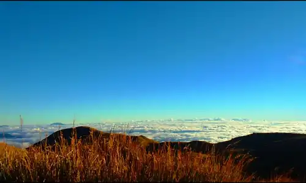
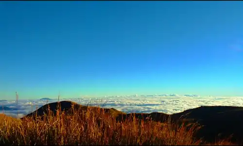

About Us
Want to go hiking but no one to go with or don't know where to go to? Well, look no more! Join us in conquering the highest peak in Luzon and witness expectacular landscape views, sunrise or sunset, sea of clouds or the milkyway. Open to all level of hikers, wether you're a begginer or an experienced hiker, we've got a trail that's just right for you.

 
